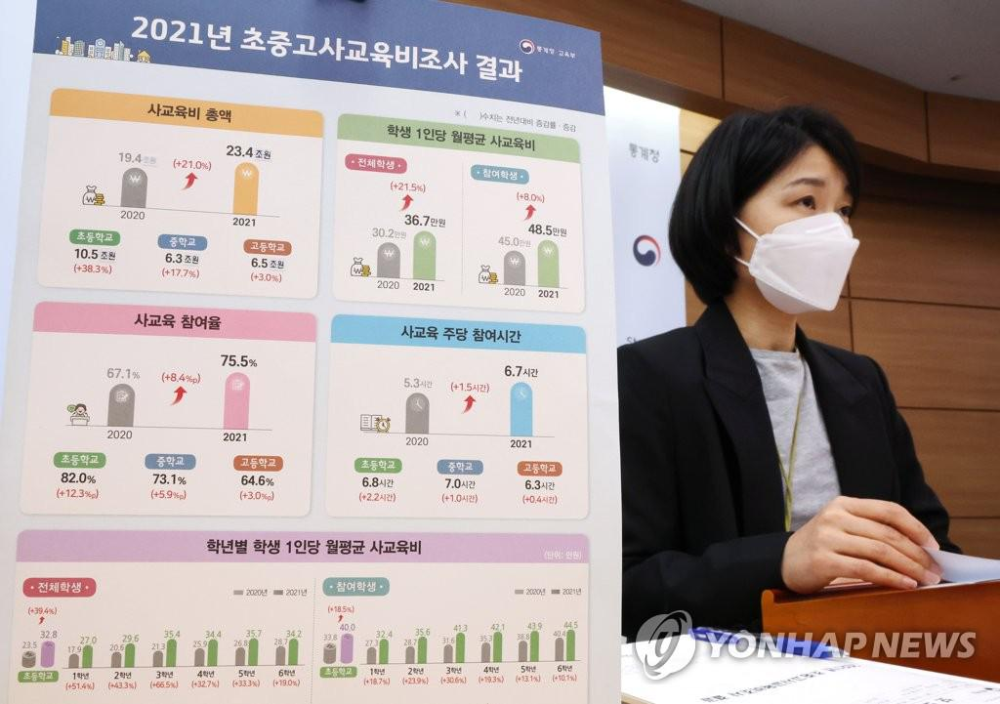

Chapter 1 데이터 그리고 데이터 과학자
- What is Data Science?
- Data Science life cycle
- Pros and Cons of Data Science

1.1 데이터
1.1.1 데이터 수집의 역사
데이터의 사전적 의미는 "양적, 질적인 변수 형태의 값으로 이루어진 것들(http://en.wikipedia.org/.wiki/Data)
빅데이터 시대에서는 양적, 질적이라고 정의하기 어려운 형태의 텍스트, 음성, 영상 모두 포함
궁극적으로 데이터 분석(data analysis)을 위해서는 사전적 의미의 잘 정돈된 형태로 정리되어야 함
수집한 데이터를 체계적으로 분석하여 그 의미를 찾으려는 시도는 수천 년 전부터 시작
사례 1 - 실험
- 현대적 의미의 데이터 분석은 로널드 피셔 경(Sir Ronald Fisher)으로부터 비롯됨

[ Ronald Aylmer Fisher (1913): https://en.wikipedia.org/wiki/Ronald_Fisher ]
- 초기 소속된 로담스테드 연구소에서 수행한 수년간의 곡물 관련 실험결과를 연구하며 현대의 실험계획법(design of experiment)을 창시함
- 당시 피셔가 수집한 데이터는 실험조건에 따른 결과 혹은 반응에 관한 데이터로 실험조건은 질적 변수로, 실험결과는 양적 변수로 표현될 수 있는 것임

[ An original figure from Fisher’s The Design of Experiments: https://www.visionlearning.com/en/library/Hidden/59/Statistics-in-research-desing/169 ]
사례 2 - Survey
- 조지 갤럽(George Gallup)은 사람들의 생각을 질문이나 문항을 통해 데이터로 수집하기 시작함

[ George Horace Gallup (1901): https://en.wikipedia.org/wiki/George_Gallup ]
- 1936년 미국 대통령 선거에서 기존 여론조사 전문기관인 잡지사 리터러리 다이제스트(the Literary Digest)가 앨프 랜든(Alf Landon)이 우세하다고 예측
- 반면 갤럽은 현직 대통령인 프랭클린 D. 루스벨트(Franklin D. Roosevelt)가 앞선다고 조사하여 갤럽 여론조사의 장을 열었음
[ 1936년 미국 대통령 선거결과 기사 :https://www.pbs.org/fmc/timeline/e1936election.htm ]
여론조사의 특성은 통제된 실험에서 얻은 데이터와는 달리 사람들의 의견을 모으는 것이기 때문에 편향된 데이터가 수집될 수 있음
1948년 미국 대통령 선거에서 갤럽은 토머스 듀이(Thomas Dewey)와 해리 트루먼(Harry S. Truman)의 대결에서 듀이의 승리를 예측하였지만, 결과는 정반대였음
사례 3 - 서비스 이용 행태
공학자였던 윌리엄 페어(William Fair)와 수학자인 얼 아이작(Earl Issac)은 현재의 FICO(http://www.fico.com)를 공동 설립함
구 페어아이작(Fair, Issac)사가 고객 행동 예측과 의사결정을 연계한 개념을 최초로 소개함
페어아이작사는 1958년 최초로 개인의 신용도를 데이터 분석에 의해 산출된 스코어로 표현함
- 현재 전 금융기관에서 대출 한도, 이자 등을 결정하는데 사용하고 있는 개인 신용평점표(credit scorecard)의 시초
- 신용평가 뿐 아니라 개인의 행동이나 반응을 예측하는 전 분야에 걸쳐 사용됨
페어와 아이작 시도의 역사적 의의
- 과거 결과에 대한 데이터를 활용하여 미래의 행동을 예측한 점
- 고객의 행동이나 기본 정보 등을 활용하여 고객의 신용 여부를 예측하는 모형 개발
- 고객의 행동이나 기본 정보 등을 활용하여 고객의 신용 여부를 예측하는 모형 개발
- 고객의 행동 및 기본 정보를 취득하여 의사결정에 활용한 점
- 고객의 행동 예측 모형 개발 후 대출금액의 한도와 이자율 결정에 반영하는 의사결정 체계 구축
- 고객의 행동 예측 모형 개발 후 대출금액의 한도와 이자율 결정에 반영하는 의사결정 체계 구축
- 데이터 분석결과로 인간의 편향적인 의사결정을 대체한 점
- 직원의 주관적 판단보다, 객관적이며 표준화된 의사결정
- 데이터 분석 기반의 의사결정이 회사에 이익이라는 것을 보여 줌으로써 금융사의 리스크 관리 및 의사결정 체계의 근간을 이룸
사례 4 - 사물인터넷
최근 제조업 공정 중 설치된 각종 측정 장비나 센터 데이터, 로그 데이터 등을 분석하여 최적 공정조건을 찾거나 장비고장을 예측하는 시도가 이루어지고 있음
사물에 센서나 데이터 취득이 가능한 구조의 인터넷을 연결하여 데이터를 수집하는 사물인터넷(Internet of Things, IoT)과 유사함
[ 사물인터넷을 나타낸 그림 : https://ko.wikipedia.org/wiki/%EC%82%AC%EB%AC%BC%EC%9D%B8%ED%84%B0%EB%84%B7#/media/%ED%8C%8C%EC%9D%BC:Internet_of_Things.jpg ]
{kind=link}
장비나 기계에서 생산되는 데이터의 수집은 품질향상이라는 과제에서 출발하였으며, 공학자이자 통계학자인 다구찌 박사의 품질관리 이론이 정립됨
실험에 의한 품질의 측정에 있어 이를 사회적 관점으로 정의
- 제품의 출하된 시점에서 성능 특성치의 변동과 오류로 사회에 끼친 손실을 금액으로 환산하여 품질을 정의
다구찌 기법(Taguchi method) 성공사례
- 1980년대 초 미국 자동차업 경쟁력 강화
- 미국 벨 연구소의 반도체 생산기술 지도
- 이외에 조선업 및 각종 부품기업의 품질혁신 기법으로 널리 보급
식스시그마 경영혁신으로 연결, 발전되어 데이터에 근거한 과학적 경영의 필요성 인식의 계기가 됨

[ 6 시그마 모델의 통계적 가정이 되는 정규분포 그림 : https://ko.wikipedia.org/wiki/6_%EC%8B%9C%EA%B7%B8%EB%A7%88#/media/%ED%8C%8C%EC%9D%BC:6_Sigma_Normal_distribution.jpg ]
{kind=link}
1.1.2 데이터마이닝 - 데이터 분석과 IT의 본격적인 만남
1.1.2.1 데이터웨어하우스
IT의 발달은 데이터의 저장과 관리, 조회뿐 아니라, 그에 따른 분석과 시각화와 같은 데이터 활용의 기회 제공
과거에는 즉시 또는 단기간 내 효과를 기대하기 어려운 데이터 분석을 위해 인프라 투자에 어려움이 있었음
IT 기술의 발달과 더불어 도입 비용이 낮아지면서 데이터 활용도가 높아졌으며, 본격적인 계기는 데이터웨어하우스(data warehouse)의 보급과 도입
데이터웨어하우스는 1980년대에 IBM이 처음 소개한 개념으로, 업무 중심의 데이터 품질관리 체계에서 목적 중심의 데이터 저장창고라는 개념을 주장하기 시작함
분석이나 의사결정 지원을 위한 본격적인 데이터 축척 및 관리, 더 나아가 활용의 기반을 다지기 시작한 시작점이라고 할 수 있음
[ 데이터 웨어하우스 : https://namu.wiki/w/%EB%8D%B0%EC%9D%B4%ED%84%B0%20%EC%9B%A8%EC%96%B4%ED%95%98%EC%9A%B0%EC%8A%A4 ]
데이터웨어하우스는 정의된 비즈니스 목적에 부합하는 데이터 분석을 수행하는 상향식(botton-up)뿐 아니라, 수집된 다양한 데이터의 활용방안을 고민하는 하향식(top-down) 접근이 요구되기도 함
취합된 데이터의 속성과 의미 파악 및 가능한 분석 방법, 그리고 분석결과를 어떻게 활용하는가를 가이드해 주는 데이터 분석가와 다양하며 복잡한 형태의 데이터를 다룰 수 있는 새로운 데이터 분석방법이 필요함
데이터 웨어하우스 도입과 함께 데이터 분석 및 활용 관점에서 소개되기 시작한 것이 데이터 마이닝(data mining) 임
1.1.2.2 데이터마이닝
데이터마이닝을 간단히 이야기하면 데이터 분석이라고 할 수 있음
“복잡성이 높은 데이터 분석에 인공지능이나 패턴인식 등에서 연구되어 온 기계학습(machine learning) 이론을 적용”하기 시작했다고 할 수 있음
기계학습과 같은 알고리즘 접근방법이 데이터 분석에 도입된 이유는 관측값마다 변수가 급격히 증가하고 통제되지 않은 인간행동에 의해 생산된 데이터라는 복잡성 때문에 기존의 모수적 모형 접근방법으로는 좋은 결과를 기대하기 어려웠기 때문
| 접근방법 | 모수적 모형 접근방법 | 알고리즘 접근방법 |
|---|---|---|
| 특징 | 단순 선형 회귀분석 \(Y=a+bx\)와 같이 모수 \(a\)와 \(b\)를 과거 데이터로부터 적합(fitting)하는 방법임. 즉, 모형 식을 세우고 식 내의 모수를 데이터를 활용하여 최소자승법이나 최대우도추정법 등으로 구하는 방식임 | 알고리즘에 의해 정해진 방식에 따라 계산된 결과로 분석하는 방식임. 정해진 방식, 즉 알고리즘에 의해 데이터로 학습(training 혹은 learning)한다는 표현을 함 |
| 장점 | 결과에 대한 해석이 대체로 용이하며, 결과가 복잡하지 않음 | 데이터 복잡성이 높아도 적용이 가능함 |
| 단점 | 가정이나 설정한 식에 부합하지 않는 데이터의 경우, 정확도 등의 성능이 낮을 수 있음 | 알고리즘의 속성이나 방법에 대한 이론적 근거를 모르고 남용하는 경우, 과적합(over-fitting) 등의 우를 범할 수 있으며, 기계만 인지할 수 있는 결과로 인해 결과 해석이 어려운 방법이 많음 |
| 해당 방법 | 선형 회귀분석, 로지스틱 회귀모형 등 | 의사결정나무, 신경망, 배깅(bagging), 랜덤 포레스트(random forest), 딥러닝(deep learning) 등 |
- 데이터마이닝은 국내의 경우 1990년대 후반, 고객관계관리(Customer Relationship Management, CRM) 분야의 고객반응, 이탈, 교차판매 등에 도입되기 시작했으며, 특히 마케팅 분야에서는 결과 해석이 용이한 의사결정나무가 가장 활발히 활용됨

[ 고등학생의 학업중단 결정과정 - 의사결정나무(CART)]

1.1.3 빅데이터 시대의 도래
1.1.3.1 빅데이터의 정의
온 세상은 인터넷이라는 고속도로에 다양한 형태와 목적의 관계망을 형성하며 시시각각 정보를 생성, 교환하고 있음
스마트폰의 보급은 모든 사람이 트위터, 페이스북 등의 사회 관계망 서비스를 통해 정보를 공유하거나 취득하며 위치정보를 발생하는 등 엄청난 양의 다양한 데이터가 지속적으로 생산될 수 있도록 만듦
맥킨지 글로벌 인스티튜투(McKinsey Global Institute)는 빅데이터를 “통상적인 데이터베이스 소프트웨어로 다룰 수 있는 한계를 넘는 크기의 데이터”로 정의함
알파벳 V로 시작하는 세 단어[Variety(다양성), Volume(규모), Velocity(속도)]로 빅데이터의 특징을 언급한 IBM의 정의가 보편화되어 있음
2011년에 소개된 3V 중심의 정의는 가치(Value) 혹은 정합성(Veracity) 등이 추가됨(http://www-01.ibm.com/software/data/bigdata)

[ IBM의 4V 관점에서의 빅데이터: https://opensistemas.com/en/the-four-vs-of-big-data/]
- 빅데이터는 단순히 대형 데이터의 의미만 갖고 있는 것은 아님
빅데이터 시대에 나타나는 분석의 특징
여러 원천에서 생산되는 모든 데이터를 연결, 통합하여 분석
- 트랜잭션 데이터
- 고객정보 데이터
- 텍스트 형태의 소셜미디어 데이터
- 위치정보 등 다양한 형태의 데이터(variety)
데이터의 크기가 매우 크다(volume)
분석결과를 실시간으로 활용(velocity)
- 기업 내에서 축적하여 잘 정리된 일방적인 데이터와는 달리, 가치발굴을 위해 수집 가능한 어떤 형태의 데이터라도 분석 대상이 될수 있음
1.1.3.2 빅데이터 시대의 주요 기술
빅데이터는 그동안 분석하기 위한 데이터로 처리, 가공하는 데 많은 시간과 비용을 들여야 했던 한계를 기술로 극복하며 분석 대상으로 부상함
구글(Google)은 저렴한 PC를 연결하여 엄청난 규모의 데이터를 처리, 분석할 수 있는 구글 파일 시스템(Google File System)과 맵리듀스(MapReduce) 사상을 세상에 공개함

[ 구글의 첫 번째 제품형 서버: https://commons.wikimedia.org/wiki/File:Google%E2%80%99s_First_Production_Server.jpg ]
{kind=link}

[ 구글의 최신 데이터 센터 내의 서버들: https://www.dailymail.co.uk/sciencetech/article-2219188/Inside-Google-pictures-gives-look-8-vast-data-centres.html ]
당시 야후(Yahoo)의 더그 커팅(Doug Cutting)이 하둡(Hadoop)이라는 프로젝트를 통해 이 두 가지 기술을 공개 소프트웨어로 세상에 알리면서 빅데이터 시대가 도래함
또 다른 빅데이터의 동인 중 하나는 공개 소프트웨어인 R로서 통계학 분야에서는 S-PLUS의 공개 소프트웨어 버전으로 꾸준히 사용되어 옴
R은 1993년 뉴질랜드 오클랜드 대학(University of Auckland)의 로버트 젠틀맨(Robert Gentleman)과 로스 이하카(Ross Ihaka) 교수에 의해 최초로 소개 됨
[ R의 창시자인 로버트 젠틀맨과 로스 이하카: https://www.nytimes.com/2009/01/07/technology/business-computing/07program.html?pagewanted=all ]
- 하드디스크가 아닌 메모리만 사용한다는 점에서 큰 데이터를 분석하기에는 취약한 면이 있었으나, 객체지향 언어로 개발이나 재활용성이 용이하고 새로운 분석방법이 공개된다는 점에서는 큰 매력을 갖고 있었음
빅데이터의 중심으로서의 R
[ R-Project site: https://www.r-project.org/ ]
- 강력한 커뮤니티 활동을 통한 신속한 패키지 제공: 2021년 18,591개
- 공개 소프트웨어로 커뮤티니 중심의 활동을 통해 다양한 기능이 빠르게 제공됨
- R의 새로운 기능이나 알고리즘, 분석방법 등은 패키지라는 형태로 제공됨
- R 사용자와 개발자의 증가로 인해 제공되는 패키지 수는 2011년 약 2,500, 2014년 약 6,000개, 2021년에는 18,591개가 제공 됨
- 데이터 분석이나 기타 관련된 빅데이터 분석에 필요한 것들의 대부분이 R 패키지로 개발, 공개되어 있음

[ R 패키지간의 연관성: https://www.datacamp.com/community/tutorials/r-packages-guide ]
- 세계적 빅데이터 기업의 기본 데이터 분석 엔진으로의 정착
- 구글, 트위터, 아마존과 같은 세계적인 빅데이터 활용 기업에서 기본 데이터 분석 엔진으로 활용
- 구글은 R 개발 커뮤니티에 큰 역할을 하고 있으며, 구글의 예측 서비스나 차트 서비스와의 연동 인터페이스(Application Programming Interface, API)를 R을 통해 제공하고 있음
- 공개 프로그램 중심의 대학 통계 분석교육
- 기업과 대학이 예산 절감의 노력으로 공개 소프트웨어 도입
- 30세 전후의 젊은 데이터 분석가들 중에는 상업용 통계분석 패키지 사용 경험이 없는 경우도 있음

[ R vs SAS 선호도: https://www.burtchworks.com/2014/04/28/the-deep-dive-sas-vs-r/ ]

[ Number of data science jobs for the more popular software : https://r4stats.com/articles/popularity/ ]
1.2 데이터 과학, 데이터 과학자
1.2.1 데이터 과학, 데이터 과학자의 유래
빅데이터 시대에는 데이터 분석가(data analyst)보다는 데이터 과학자(data scientist)라는 호칭을 사용하며 그에 부합하는 사람을 찾기 시작함
하버드 비즈니스 리뷰(Harvard Business Review, 2012, https://hbr.org/2012/10/data-scientist-the-sexiest-job-of-the-21st-century) 에서 데이터 과학자가 “21세기의 가장 매력적인 직업”으로 소개된 후, 데이터 과학자에 대한 궁금증 급증
데이터 분석가는 주어진 데이터 분석 관련 일들을 전문적이지만 정형화된 방법과 도구로 해결하는, 직업적이며 기능적인 호칭
데이터 과학자는 데이터의 구조, 성질, 법칙 등을 체계적이면서도 이론적인 지식체계로 해결하는 자에 대한 경칭
- 관찰되는 모든 자연현상과 사회현상을 다루는 진정한 과학자의 능력을 요구
데이터 과학자 혹은 데이터 과학
위키피디아에 따르면(https://en.wikipedia.org/wiki/Data_science) 데이터 과학자 혹은 데이터 과학이라는 호칭은 1974년에 코펜하겐 대학의 전산학 교수인 피터 나우어(Peter Naur, 1924~) 교수로부터 비롯 : Computer science = data science
1997년 통계학자인 제프 우 교수는 “통계=데이터 과학?(Statistics=Data Science?)”이라는 제목의 강연을 한 바 있음
빅데이터 시대에 필요한 융합형 데이터 과학을 본격적으로 알린 사람은 퍼듀대학의 윌리엄 클리블랜드(William Cleveland) 교수
- 논문 "데이터 과학: 통계 영역에서의 기술적 확장을 위한 실행계획(Data science: an action plan for expanding the technical areas of the field of statistics)
- 데이터 과학은 더 향상된 데이터 분석을 위해 통계학이 전산학과 융합하며 학습의 영역을 확장해 나가는 과정
- 윌리엄 클리블랜드 교수가 주장한 데이터 과학자란 통계학적인 소양과 더불어 어떠한 데이터도 처리, 분석, 표현할 수 있는 전산학 능력을 갖춘 자임
[ Trellis graph : http://codealamode.blogspot.com/2012/02/trellis-graphs-in-ggplot2.html]
1.2.2 왜 데이터 과학자인가?
데이터 과학자의 필요성은 빅데이터의 관심이 고조되면서부터 강화되었다고 볼 수 있음
데이터 과학자의 필요성이 부각된 것은 빅데이터의 관심이 고조되면서 부터임
[ 구글 트렌드(big data vs datascientst + data science) : https://trends.google.co.kr/trends/explore?date=all&geo=KR&q=big%20data,data%20science%20%2B%20data%20scientist]
빅데이터의 특징
- 데이터의 원천: 내부(internal) vs. 외부 혹은 소셜(external+social)
- 현재까지의 분석은 기업이 확보한 내부(internal) 데이터로 정형화된 것에 국한
- 빅데이터 시대에는 소셜네트워크서비스(Social Network Service, SNS; 사회관계망 서비스)나 위치정보 등에서 취합된 외부(external) 데이터가 추가
- 이런 외부 데이터는 필요없는 정보가 많이 포함되어 있으므로, 데이터 필터링 과정이나 그에 관련한 노하우 축적이 필요
- 데이터의 형태: 구조적(nearly structured) vs, 비구조적(unstructured)
- 일반적으로 분석 대상 데이터는 고객과 같은 관측값 단위의 구조적 데이터
- 빅데이터 시대에는 SNS 사용자가 남긴 텍스트와 같은 비구조적 데이터
- 이외에 실시간으로 발생하는 위치정보, 로그 정보 등도 활용
- 따라서 다양한 원천에서 취합된 비구조적 데이터를 분석 가능한 구조적 데이터로 처리하는 능력이 매우 중요
- 수집 대상 데이터: 축척된 데이터(data-in-rest) vs. 실시간 생성 데이터(data-in-motion)
- 데이터웨어하우스와 같이 기업들이 도입한 대부분의 비즈니스 정보 분석(Business Intelligence) 인프라는 데이터베이스에 데이터를 축적한 후 분석을 수행
- 빅데이터 시대에는 엄청난 양의 데이터가 실시간으로 생성되므로 일부 분석은 데이터베이스에 축적하지 않고 관심 있는 메시지, 즉 이벤트(vent)만 취득하여 실시간 분석을 하는 패러다임으로 변화
- 분석결과 횰용: 테이블, 단순 그래프로 구성된 보고서를 작성하는 지원(table+graph+analytics in back-office) vs. 역동적인 데이터 시각화 및 분석 결과가 의사결정에 직접 적용되는 지원(dynamic data visualization+analytics in front-end)
- 빅데이터 시대에는 편재보다 더욱 빠른 속도의 분석과 분석결과에 근거한 의사결정 및 실행이 필요
- 분석결과의 형태는 테이블이나 그래프만으로 나타냈던 과거와는 달리, 입체적이고 생동감 있는 결과로 빠른 의사결정을 돕는 데이터 시각화에 초점을 맞추어 변화
- 분석방법도 패키지형태의 분석 소프트웨어를 사용하기보다는 분석 자동화를 위한 분석엔진의 활용으로 변화
- 처리 및 분석환경: 중앙처리 서버(centralized server) vs. 분산처리 및 클라우드 환경(distributed processing+cloud)
- 데이터웨어하우스에 분석 데이터를 축적하고 각종 관련 분석 툴로 구성된 기존 하드웨어는 빅데이터 처리를 위한 인프라를 구축하는 데 확장성의 한계와 고비용의 어려움이 있음
- 저가의 많은 서버를 연결하여 분산처리 환경을 구성하거나, 분산처리 환경을 제공하는 클라우드 형태의 서비스 활용
데이터 과학자에게 요구되는 기술
- 데이터 분산처리 및 분석 컴퓨팅 기술
- 빅데이터는 대부분 많은 잡음(noise) 및 분석목적과 관련 없는 정보인 경우가 많기 때문에 필터링 등의 전처리가 필요함
- 빅데이터 처리뿐 아니라 각종 계산, 모델링, 데이터 시각화에서도 분산 컴퓨팅이 주요 기술로 요구되고 있음
- 통계엔진을 활용한 분석 구현기술
- 빅데이터는 너무나 많은 정보로 인해 분석할 대상이 많으며, 데이터가 빠르게 생산되기 때문에 과거 수작업으로 진행하던 작업을 자동화로 구현 할 필요가 있음
- 즉, 예측모형을 개발하거나 각종 고급분석을 수행하는 것은 물론 분석방법이나 과정을 정형화할 수 있는 경우에는 일련의 과정을 프로그램화하여 자동 수행이 가능하도록 구현할 필요가 있음
- 이와 같은 작업은 배치 형태의 데이터 분석에 기반한 상업용 패키지로는 효율성이 떨어지므로, 프로그램과 타 IT 환경과의 연계가 용이한 R로 자동화를 구현해야 함
- 데이터 시각화 기술
- 많은 데이터로부터 신속하게 산출된 분석결과는 쉽게 전달할 수 있어야 함
- 많은 정보를 간결하면서도 명확하게 전달하는 방법으로 데이터 시각화 기술이 부상하고 있음
- 데이터 시각화는 단순 그래프가 아닌 다차원의 데이터를 효율적으로 표현하고 흥미로운 스토리 기반으로 작성되는 등 예술적이며 인문학적인 소양까지 요구됨
- 실시간으로 대응하기 위한 비즈니스 룰 설계 및 개발기술
- 데이터에 의해 개발된 예측모형 등은 어쩌면 과거에 발생한 현상을 일반화한 것일 수도 있음
- 현실에서는 일반적인 모형으로 예측할 수 있는 것 이외에, 발생빈도는 낮지만 예외적인 케이스들을 발견하고 관리하기를 원함
- 예) 내부자의 부정행위나 고개정보 유출의 징후 포착, 신용카드 부정사용에 대한 특이한 케이스 관리 등
- 예외의 경영(management by exception)은 단 한 번의 실수로 큰 타격을 받을 수 있는 경쟁심화 경영환경에서 매우 중요하며, 예외적인 위험의 징후는 모형이 아닌 일종의 룰(rule)로 조기 포착과 대응이 가능함
- 즉, 즉각적인 징후 포착에 따른 조치와 관련된 현상을 발굴하고 그에 적절한 사후 조치를 연결하는 능력과 기술이 필요함
데이터 과학자는 많은 능력을 요구하며, 따라서 그만큼 어려운 길이며, 현재 드문 능력자이므로 21세기에 가장 매력적인 직업중 하나임
데이터 과학자의 희소가치와 높은 연봉은 데이터 과학자를 매력적인 직업으로 만드는 데 한몫을 함
[ Data Scientist jobs : https://www.roberthalf.com/jobs/data-scientist ]
1.2.3 데이터 과학자가 되려면
데이터 과학자에게 필요한 기술만으로도 데이터 과학자가 되는 길은 매우 험난함
하지만, 현재의 싀소성과 데이터의 증가는 멈추지 않을 것이며, 기업이 필요로 하는 데이터 과학자의 수는 계속 증가할 것임
스와미 찬드라세카란(Swami Chandrasekaran)은 2013년에 기고한 “데이터 과학자 되기-학과목 노선도(Becoming a Data Scientist-Curriculum via Metromap)” (http://nirvacana.com/thoughts/becoming-a-data-scientist/)에서 총 10개의 종착역으로 표현된 주요 기술을 열거함
- 기본 기술
- 통계학
- 프로그래밍
- 기계학습
- 텍스트마이닝/자연어 처리
- 데이터 시각화
- 빅데이터
- 데이터 가공 및 통합(data ingestion)
- 데이터 표준화/변수 선택 등(data munging)
- 기본 도구 활용

[ 데이터 과학자 학습경로: http://nirvacana.com/thoughts/wp-content/uploads/2018/01/RoadToDataScientist1.png ]
{kind=link}
MarketingDistillery.com에서는 데이터 과학자 요구 기술로 다음을 요구함
- 수학 및 통계학
- 프로그래밍과 데이터베이스
- 도메인 지식과 소프트스킬
- 커뮤니케이션과 시각화

[ 현대 데이터 과학자의 요구 기술: https://ichi.pro/ko/deiteo-tim-ui-dayanghan-gisul-mich-yeoghal-280289576609023 ]
- 기술적인 측면을 제외한 특징을 정리하면 다음과 같음
- 정리하려고 하는 영역을 이해하겠다는 열정
- 데이터에 대한 끝없는 호기심
- 전략적이며 능동적이고 창의적이면서도 협업에 능통함
- 상급자와의 원만한 관계 형성 능력
- 이야기를 만들어 전달하는 능력
- 예술적 감각
데이터 과학자가 되기 위해서는
기술 측면에서의 학습
지속적인 실전 경험 및 작지만 스스로 시도하는 것 등을 통한 간접 경험 축척
소통과 협업에 대한 스스로의 노력 병행